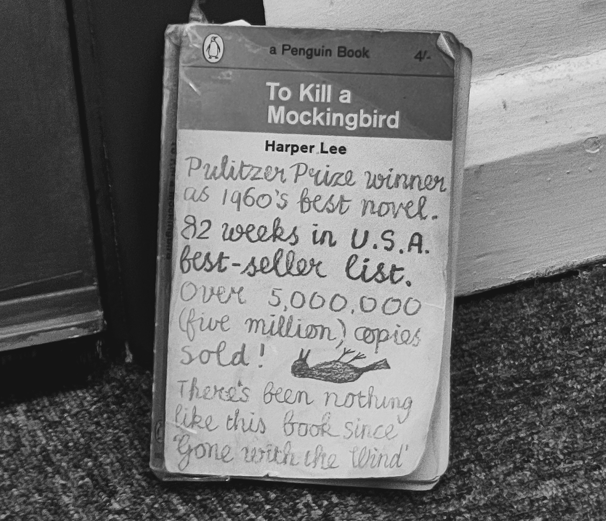

To kill a mockingbird book review

I started re-reading to kill a mocking bird, here are some of my collected thoughts and opinions on the book and its characters.
The will be spoilers, be warned.
Im not going lie, im not a very smart man. Some things may have gone over my head, the book is well beyond my skillset when it comes to reading.
Last i remmeber reading this book; i read up-to when miss maudies house burnt down, I find it hard to dedicate time to reading/listening to books. For example i still havent listened to huxleys. brave new world
I like shorter stories, like john steinbecks of mice and men
and The pearl
I will admit i did pleasently enjoy reading the book, but its an absloute slog to read espesically at my skill level, but i like a challenge which is why i keep returning to it. Theres alot of southern american slang, which for me makes it harder to read. Some words i will have to take time to search up the definition for.
Chapter one sets the very scene, in the sleepy old town of maycomb county Apparently harper lee took inspiration from her real birthplace and childhood home of Monroeville, Alabama.
in the main residential street in the town lied the three finch's and their cook Atticus,jem,scout and Calpurnia.
Maycomb was described as a sleepy old town, where in rain the streets turn into red slop;
grass grew on the sidewalks, and the courthouse sagged. The book has a very good way of setting atmosphere; the are times i could imagine i am in the fictional town of maycomb county myself, such as the description of the radley place.
A slate-grey house with Rain-rotted shingles Shigles Y'know part of a roof
and the remains of a picket fence. Its not a place i would like to live close to;
the radleys were described as people who kept to themselves,
they didnt go to church or go out much, the shutters were always closed and Mrs radley rarely chatted to neighbours.
Their youngest son; Boo Radley was involved with some misfits, Boo got into some trouble with the law and was going to be sent to an
industiral school. MR Radley beleiving this was a disgrace, saw to it to get boo released in which he did.
Currently im still reading the book, I've enjoyed it so far and i would reccomend you check it out Unless you have the attention span of a goldfish, like me!
the book is definitely a good read. I might update this review in the future, as its quite incomplete.